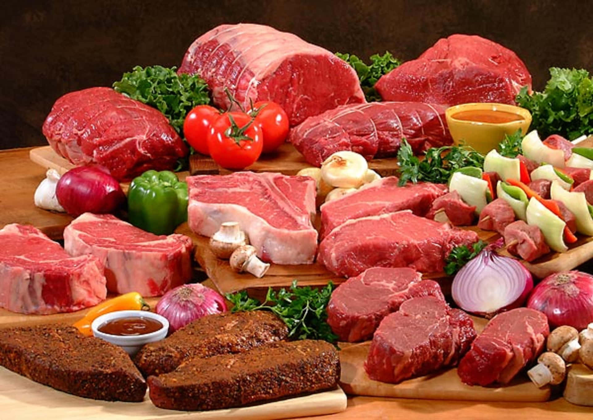

CULINÁRIA
.webp)
CULINÁRIA CANADENSE
A culinária canadense é variada e reflete sua diversidade cultural. No leste predominam frutos do mar, em Quebec o poutine e pratos franceses, no oeste o salmão, e no norte carnes de caça e peixes indígenas. O xarope de bordo é o símbolo do país, que combina tradições indígenas, francesas, britânicas e de imigrantes.
MAPLE
O maple syrup, ou xarope de bordo, é um símbolo do Canadá, feito da seiva das árvores de bordo colhida no início da primavera. Após fervido, vira um xarope doce usado em panquecas, waffles e outros pratos. O Canadá, especialmente Quebec, produz mais de 70% do total mundial. Além de alimento tradicional, o maple representa a natureza, a cultura e o orgulho nacional, presente até na bandeira do país.
CLIMA
O clima é bastante variado: no norte, predominam temperaturas muito frias e neve durante grande parte do ano, enquanto o sul, especialmente perto da fronteira com os Estados Unidos, tem verões mais quentes e agradáveis.
PREFERÊNCIA POR REGIÕES
LESTE
destaque para frutos do mar.

OESTE
salmão é o principal ingrediente.

QUEBEC
poutine e pratos de origem francesa.

NORTE
carnes de caça e peixes das comunidades indígenas.
